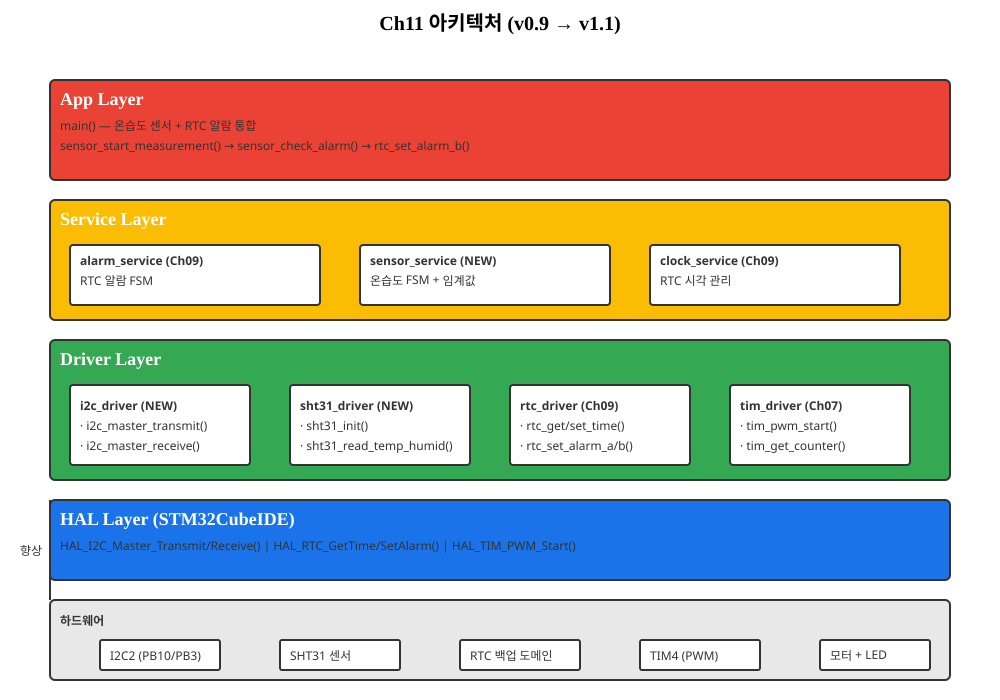
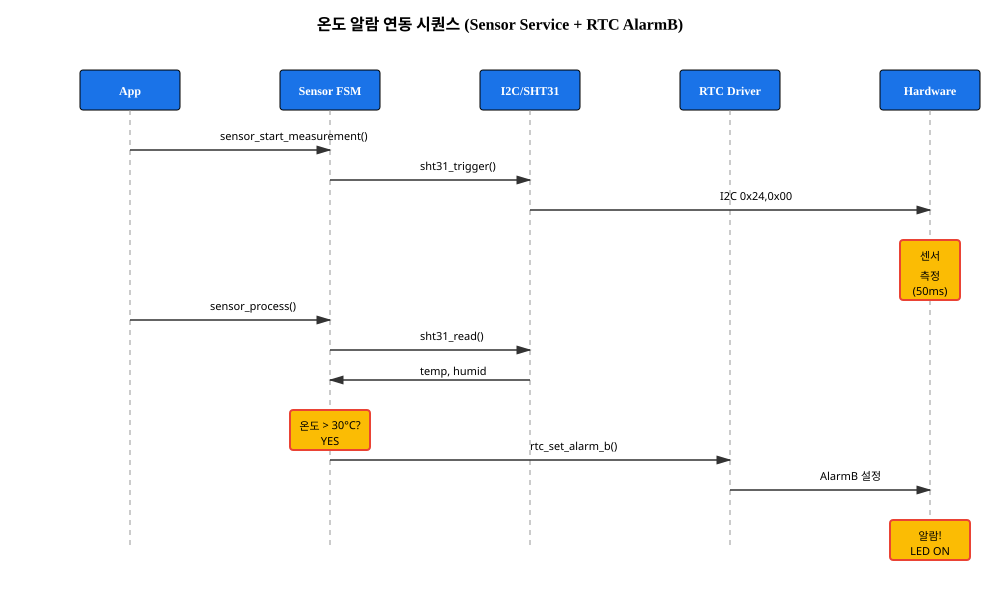
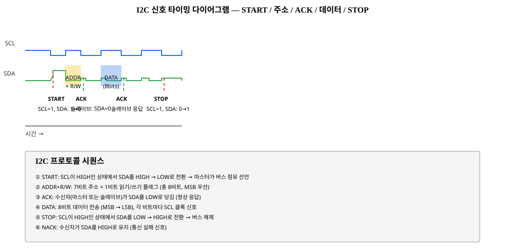

시간을 알았다면, 이제 "지금 몇도인가" — I2C 프로토콜 마스터링과 센서 드라이버 설계로 스마트 시계에 환경 감지 능력을 부여한다
누적 기능: I2C 통신 + SHT31 온습도 데이터 수집 + 온도 알람 연동 (i2c_driver + sht31_driver + sensor_service 추가, v0.9 → v1.1)
§11.0 "온도를 읽다 — 센서와의 대화"
지금까지의 여정을 정리합시다.
Ch09에서 RTC 시계 FSM을 완성했고, v0.9에서 "지금 몇 시인가"를 알 수 있게 되었습니다.
스텝 모터를 이용해 시침을 움직였을 때, 시각과 현실이 동기화되는 느낌 — 그것이 스마트 시계의 기본입니다.
하지만 한 가지 중요한 정보가 빠져 있습니다.
"지금 몇도인가?"
스마트 시계가 진정 "환경 인식 기기"가 되려면, 시각뿐 아니라 온습도 정보까지 읽어야 합니다.
이 챕터에서는 I2C(Inter-Integrated Circuit) 통신 프로토콜을 마스터하고,
SHT31 온습도 센서와 대화하는 드라이버를 설계·구현합니다.
이 챕터가 끝나면:
I2C 프로토콜의 물리 계층(START/STOP/ACK/NACK)을 이해하고, HAL 함수로 제어합니다.
SHT31 센서 데이터시트를 읽고, 측정 명령 → 데이터 수신까지의 시퀀스를 구현합니다.
CRC-8 검증 알고리즘(다항식 0x31)으로 센서 데이터 무결성을 보장합니다.
Ch09의 RTC Alarm FSM 패턴을 재활용하여 Sensor Service FSM을 설계합니다.
온도 > 30°C 조건에서 RTC AlarmB를 자동 트리거하여, 아키텍처를 v0.9 → v1.1로 업그레이드합니다.
특히 중요한 포인트는 세 가지 레이어의 분리입니다.
I2C Driver: HAL_I2C_* 함수 래핑 — 프로토콜 세부사항 추상화
SHT31 Device Driver: 센서 명령어 + CRC 검증 — 하드웨어 제어
Sensor Service: FSM + 온도 임계값 → 비즈니스 로직
이 패턴은 향후 Ch12(SPI + TFT LCD), Ch13(ADC), Ch14(I2C DMA)에서도 재사용됩니다.
센서 통신의 기본 아키텍처를 한 번 제대로 배우면, 어떤 센서든 드라이버를 설계할 수 있습니다.
이 챕터의 아키텍처 위치
Ch11은 세 가지 신규 컴포넌트를 추가합니다:
① Driver 레이어에 i2c_driver와 sht31_driver 신규 추가,
② Service 레이어에 sensor_service 신규 추가.
Ch09의 alarm_service는 그대로 유지되며, 이번에는 온도 데이터와 연동됩니다.

그림 11-1. v0.9 → v1.1 아키텍처 — I2C Driver + SHT31 Device Driver (Driver) + Sensor Service (Service) 추가
인터페이스 설계
Ch11에서 추가되는 API입니다. I2C Driver, SHT31 Device Driver, Sensor Service 세 부분입니다.
/* i2c_driver.h — Driver 레이어 (I2C 마스터 추상화) */
typedef int32_t i2c_status_t;
#define I2C_OK 0
#define I2C_ERROR -1
#define I2C_TIMEOUT -2
/**
* @brief I2C 마스터 송신 (블로킹)
* @param dev_addr I2C 슬레이브 주소 (7비트)
* @param data 송신 데이터 포인터
* @param len 송신 길이 (바이트)
* @param timeout_ms 타임아웃 (밀리초)
* @return I2C_OK 또는 I2C_ERROR/I2C_TIMEOUT
*/
i2c_status_t i2c_master_transmit(uint16_t dev_addr, const uint8_t *data,
uint16_t len, uint32_t timeout_ms);
/**
* @brief I2C 마스터 수신 (블로킹)
* @param dev_addr I2C 슬레이브 주소 (7비트)
* @param data 수신 데이터 버퍼
* @param len 수신 길이 (바이트)
* @param timeout_ms 타임아웃 (밀리초)
* @return I2C_OK 또는 I2C_ERROR/I2C_TIMEOUT
*/
i2c_status_t i2c_master_receive(uint16_t dev_addr, uint8_t *data,
uint16_t len, uint32_t timeout_ms);
/* sht31_driver.h — Device Driver (센서 제어 + CRC 검증) */
typedef int32_t sht31_status_t;
#define SHT31_OK 0
#define SHT31_ERROR -1
#define SHT31_CRC_ERR -2
/**
* @brief SHT31 초기화 (I2C 통신 확인)
* @return SHT31_OK 또는 SHT31_ERROR
*/
sht31_status_t sht31_init(void);
/**
* @brief SHT31 온습도 데이터 읽기 (블로킹, 측정+대기+수신)
* @param p_temp 온도 출력 포인터 (°C)
* @param p_humid 습도 출력 포인터 (%)
* @return SHT31_OK, SHT31_ERROR, 또는 SHT31_CRC_ERR
*/
sht31_status_t sht31_read_temp_humid(float *p_temp, float *p_humid);
/**
* @brief SHT31 측정 시작 (비블로킹)
* @return SHT31_OK 또는 SHT31_ERROR
*/
sht31_status_t sht31_trigger_measurement(void);
/**
* @brief SHT31 측정 결과 수신 (비블로킹, 이전 trigger 이후 ~50ms 경과 필수)
* @param p_temp 온도 출력 포인터
* @param p_humid 습도 출력 포인터
* @return SHT31_OK, SHT31_ERROR, 또는 SHT31_CRC_ERR
*/
sht31_status_t sht31_read_measurement(float *p_temp, float *p_humid);
/* sensor_service.h — Service 레이어 (FSM + 비즈니스 로직) */
typedef enum {
SENSOR_IDLE, // 대기 상태
SENSOR_MEASURING, // 측정 중
SENSOR_DATA_READY, // 데이터 준비 완료
SENSOR_ALARM, // 온도 임계값 초과
SENSOR_ERROR // 통신/CRC 에러
} sensor_state_t;
/**
* @brief Sensor Service 초기화
* @return 0 (성공) 또는 -1 (실패)
*/
int32_t sensor_service_init(void);
/**
* @brief 측정 시작 (FSM: IDLE → MEASURING)
*/
void sensor_service_start_measurement(void);
/**
* @brief FSM 프로세스 (메인 루프에서 주기적 호출, 예: 100ms마다)
*/
void sensor_service_process(void);
/**
* @brief 현재 FSM 상태 조회
*/
sensor_state_t sensor_service_get_state(void);
/**
* @brief 측정 데이터 획득 (SENSOR_DATA_READY 상태에서만 유효)
* @param p_temp 온도 출력
* @param p_humid 습도 출력
* @return 0 (성공) 또는 -1 (데이터 없음)
*/
int32_t sensor_service_get_data(float *p_temp, float *p_humid);
/**
* @brief 온도 임계값 설정
* @param temp_high 상한 (°C, 예: 30.0)
* @param temp_low 하한 (°C, 예: 15.0)
*/
void sensor_service_set_temp_threshold(float temp_high, float temp_low);
/**
* @brief 온도 알람 플래그 확인 및 클리어
* @param p_alarm_flag 알람 발생 시 1 반환
* @return 0 또는 -1
*/
int32_t sensor_service_check_alarm(uint8_t *p_alarm_flag);
FSM 설계
그림 11-2. Sensor Service FSM — IDLE / MEASURING / DATA_READY / ALARM / ERROR 5개 상태
Ch09 Alarm FSM 패턴 재활용 — 이벤트 소스가 RTC(시각)에서 SHT31(센서)로 변경
시퀀스 다이어그램

그림 11-3. 온도 알람 연동 시퀀스 — Sensor Service + RTC AlarmB 통합
학습 목표
이 챕터를 완료하면 다음을 할 수 있습니다.
[이해] I2C 프로토콜의 START/STOP/ACK/NACK 시퀀스를 설명하고, 마스터/슬레이브의 역할을 구분할 수 있다.
[적용] HAL_I2C_Master_Transmit/Receive를 사용하여 센서와 통신하는 코드를 작성할 수 있다.
[분석] CRC-8 검증 알고리즘(다항식 0x31)을 이해하고, 수신한 센서 데이터의 무결성을 검증할 수 있다.
[적용] Device Driver 패턴(I2C, SHT31)을 설계하고, 상위 Service 레이어와의 인터페이스를 정의할 수 있다.
[창조] Sensor Service FSM을 설계·구현하여, 온도 임계값 알람을 RTC와 통합하고 v1.1 아키텍처를 완성할 수 있다.
프로젝트 v1.1: 이 챕터 완료 후 RTC 시각 + 온습도 데이터 수집 + 온도 알람이 동작합니다. 스마트 시계는 이제 "환경 인식 기기"입니다!
§11.1 I2C 프로토콜 심화 — "전화 예약의 핸드셰이크"
I2C(Inter-Integrated Circuit)는 동기식 직렬 통신 프로토콜입니다.
Ch04의 UART(비동기식, 직렬)와는 다릅니다.
"동기식"은 무엇이고, "직렬"과 무엇이 다를까요?
비유로 이해하기
UART는 두 친구가 메시지를 주고받는 것입니다. 수신자가 정확히 언제 읽을지 알 수 없어서, 미리 약속한 속도(baud rate)로 일정한 간격을 지킵니다. 마치 "매 초마다 한 글자씩" 리듬을 정한 것처럼.
I2C는 교사와 학생의 손 올리기입니다. 학생(슬레이브)이 준비되면 손을 들고, 교사(마스터)가 "좋아, 지금 말해"라고 신호(클럭)를 보냅니다.
슬레이브가 준비되지 않으면 손을 들지 않고, 마스터가 기다립니다.
이것이 "동기" — 클럭 신호로 정확히 동기화됨을 뜻합니다.
※ 이 비유의 한계: I2C의 오픈드레인(open-drain) 특성으로 인해, 마스터와 슬레이브가 동시에 버스를 "잡아당길" 수 있습니다. 학생이 중간에 "잠깐, 아직 생각 중"이라고 손을 내려도 버스가 LOW 상태로 유지되는 "클럭 스트레칭"이 발생하는데, 이 비유에서는 생략했습니다.
I2C 프로토콜의 핵심은 두 개의 핀입니다:
SDA (Serial Data Line) — 데이터를 주고받는 라인
SCL (Serial Clock Line) — 마스터가 생성하는 클럭 신호
UART의 TX/RX 방향성 핀과 달리, I2C의 SDA/SCL은 방향이 없습니다.
마스터와 슬레이브가 동시에 같은 핀을 "잡아당길(pull)" 수 있기 때문입니다.
이런 특성을 오픈드레인(open-drain)이라 부릅니다.
물리적으로는 풀업 저항(pull-up resistor, 보통 4.7kΩ)을 통해 HIGH 상태를 유지하고,
LOW를 만들 때만 능동적으로 드라이브합니다.

그림 11-4. I2C 신호 타이밍 — START, 주소 + R/W, ACK, 데이터, STOP 시퀀스
I2C 프레임 구조는 다음과 같습니다:
START 조건: SCL이 HIGH인 상태에서 SDA를 HIGH → LOW로 전환
주소 프레임 (8비트):
비트 7~1: 슬레이브 주소 (7비트)
비트 0: R/W 플래그 (0=송신, 1=수신)
ACK 비트: 슬레이브가 주소를 인식했으면 SDA를 LOW로 당김
데이터 프레임 (반복): 최상위 비트부터 8비트 송수신
ACK/NACK: 수신자가 ACK(LOW) 또는 NACK(HIGH) 응답
STOP 조건: SCL이 HIGH인 상태에서 SDA를 LOW → HIGH로 전환
§11.2 I2C 클럭 스트레칭 — "택시 신호등의 대기"
I2C는 "동기식"이지만, 실제로는 유연합니다.
마스터와 슬레이브의 처리 속도가 다를 수 있기 때문입니다.
클럭 스트레칭(Clock Stretching)은 이 불일치를 해결하는 메커니즘입니다.
비유로 이해하기
택시를 호출했습니다(START). 택시 기사(마스터)가 신호등을 켭니다(클럭 신호).
신호등이 "녹색(HIGH)"이면 진행, "빨강(LOW)"이면 정지입니다.
하지만 급격한 회전이 필요하면, 기사가 신호등을 "빨강"으로 유지합니다(SCL을 LOW로 잡아당김).
승객(슬레이브)도 "아직 준비 중"이면 신호등을 빨강으로 누른 채로 있습니다.
둘 다 신호등을 놓아야 녹색이 됩니다.
※ 이 비유의 한계: 실제 교통 신호와는 다릅니다. I2C에서는 아무도 "녹색"을 강제할 수 없고, 둘 다 "빨강"을 원하지 않을 때만 자동으로 녹색이 됩니다(풀업 저항 때문).
I2C 클럭의 대역폭(속도)는 세 가지 모드가 있습니다:
Standard Mode: 100kHz (일반적, 전통적)
Fast Mode: 400kHz (빠른 통신, 대부분의 센서)
Fast Mode Plus: 1MHz (초고속, 고급 용도)
하지만 클럭 속도보다 중요한 것은 슬레이브의 대응 여부입니다.
센서가 데이터를 준비하는 데 시간이 걸리면, SCL을 LOW로 잡아당겨 마스터에게 "잠깐, 아직 중"이라고 신호합니다.
마스터는 SCL이 다시 HIGH가 될 때까지 기다립니다.
이것이 클럭 스트레칭입니다.
§11.3 STM32 I2C 마스터 제어 — "HAL API 활용"
STM32CubeIDE에서 I2C를 제어하는 가장 간단한 방법은 폴링 모드(Polling Mode)입니다.
마스터가 송수신 완료를 기다리는 동안, CPU는 계속 상태를 확인(폴링)합니다.
이는 Ch04 UART 폴링과 동일한 패턴입니다.
NUCLEO-F411RE의 I2C2는 다음과 같이 구성됩니다:
I2C2_SCL: PB10
I2C2_SDA: PB3
속도: 100kHz (표준 모드)
HAL 폴링 함수는 다음과 같습니다:
/* i2c_driver.c — I2C 마스터 폴링 구현 */
#include "main.h"
#include "log.h"
#define I2C_TIMEOUT_MS 1000
/**
* I2C 마스터 송신 (블로킹, 폴링)
* 마스터가 슬레이브에게 데이터를 보냅니다.
* 예: SHT31 측정 명령 0x24, 0x00 송신
*/
int32_t i2c_master_transmit(uint16_t dev_addr, const uint8_t *data,
uint16_t len, uint32_t timeout_ms)
{
HAL_StatusTypeDef status;
LOG_D("i2c_master_transmit: addr=0x%02X, len=%d", dev_addr, len);
// HAL API: 마스터 송신 (폴링)
// dev_addr: 7비트 주소 (HAL이 자동으로 비트 0에 0을 추가)
// data: 송신 데이터 포인터
// len: 송신 길이
// timeout_ms: 타임아웃
status = HAL_I2C_Master_Transmit(&hi2c2, (dev_addr << 1),
(uint8_t *)data, len, timeout_ms);
if (status == HAL_OK) {
LOG_I("i2c_master_transmit: success");
return 0; // I2C_OK
} else if (status == HAL_TIMEOUT) {
LOG_W("i2c_master_transmit: TIMEOUT");
return -2; // I2C_TIMEOUT
} else {
LOG_E("i2c_master_transmit: HAL error %d", status);
return -1; // I2C_ERROR
}
}
/**
* I2C 마스터 수신 (블로킹, 폴링)
* 마스터가 슬레이브로부터 데이터를 받습니다.
* 예: SHT31 온습도 데이터 6바이트 수신
*/
int32_t i2c_master_receive(uint16_t dev_addr, uint8_t *data,
uint16_t len, uint32_t timeout_ms)
{
HAL_StatusTypeDef status;
LOG_D("i2c_master_receive: addr=0x%02X, len=%d", dev_addr, len);
// HAL API: 마스터 수신 (폴링)
status = HAL_I2C_Master_Receive(&hi2c2, (dev_addr << 1),
data, len, timeout_ms);
if (status == HAL_OK) {
LOG_I("i2c_master_receive: success, data[0]=0x%02X", data[0]);
return 0; // I2C_OK
} else if (status == HAL_TIMEOUT) {
LOG_W("i2c_master_receive: TIMEOUT");
return -2; // I2C_TIMEOUT
} else {
LOG_E("i2c_master_receive: HAL error %d", status);
return -1; // I2C_ERROR
}
}
§11.4 SHT31 센서 명령어 및 데이터 형식
SHT31은 Sensirion에서 제조한 디지털 온습도 센서입니다.
핵심 사양을 정리하면:
CRC(Cyclic Redundancy Check)는 데이터 전송 중 오류를 감지하는 수학적 방법입니다.
Ch04의 체크섬(단순 합산)보다 훨씬 강력합니다.
SHT31은 다항식 0x31로 CRC-8을 계산합니다.
비유로 이해하기
데이터를 문서 다발이라고 생각하세요. 체크섬은 "페이지 합계"(몇 페이지인지)만 기록하는 것입니다.
한 페이지가 손상되면, 합계가 맞지 않아 감지할 수 있습니다.
하지만 "페이지 2가 빠지고, 페이지 3 사본이 두 개"라면? 합계는 같으므로 감지 불가.
CRC는 "페이지마다 고유한 숫자(예: 페이지 내용의 특수 해시)를 곱하고 모두 더한다"는 방식입니다.
이렇게 하면 데이터의 순서와 내용 모두를 검증할 수 있습니다.
※ 이 비유의 한계: CRC의 수학은 다항식 나눗셈이므로, 단순 곱셈으로는 정확하지 않습니다.
SHT31 CRC-8의 파라미터:
다항식(Polynomial): 0x31
초기값(Init Value): 0xFF
입력 반사(Input Reflection): NO
출력 반사(Output Reflection): NO
최종 XOR: 0x00 (생략)
/* sht31_crc.c — CRC-8 계산 (SHT31 형식) */
#include
/**
* @brief CRC-8 계산 (다항식 0x31, 초기값 0xFF)
* @param data 입력 데이터
* @param len 데이터 길이
* @return CRC-8 값 (0~255)
*
* 예시: SHT31 온도 데이터 (0xBE, 0x00) → CRC는 0xAC
*/
uint8_t crc8_sht31(const uint8_t *data, uint16_t len)
{
uint8_t crc = 0xFF; // 초기값
for (uint16_t i = 0; i < len; i++) {
crc ^= data[i]; // 입력 바이트와 XOR
for (uint8_t j = 0; j < 8; j++) {
if (crc & 0x80) {
// MSB가 1이면 다항식과 XOR
crc = (crc << 1) ^ 0x31;
} else {
// MSB가 0이면 그냥 시프트
crc = crc << 1;
}
crc &= 0xFF; // 8비트 마스킹
}
}
return crc;
}
/**
* @brief CRC-8 검증
* @param data 데이터 (마지막 바이트가 CRC)
* @param len 데이터 길이 (CRC 포함)
* @return 0 (OK) 또는 -1 (CRC 실패)
*/
int32_t crc8_verify_sht31(const uint8_t *data, uint16_t len)
{
if (len < 1) return -1; // 데이터가 없음
uint8_t expected_crc = data[len - 1]; // 수신한 CRC
uint8_t calculated_crc = crc8_sht31(data, len - 1); // 계산한 CRC
if (expected_crc == calculated_crc) {
return 0; // OK
} else {
return -1; // CRC 불일치
}
}
그림 11-7. CRC-8 다항식 나눗셈 과정 (데이터 0xBE, 0x00 예시)
§11.6 SHT31 Device Driver 구현
이제 I2C Driver + CRC 알고리즘을 결합하여 SHT31 Device Driver를 만들겠습니다.
이것은 Ch04 UART Driver 패턴과 동일합니다.
HAL의 저수준 함수를 래핑하여, 상위 레이어에는 "온습도 읽기"라는 고수준 인터페이스를 제공합니다.
/* sht31_driver.h — SHT31 Device Driver 헤더 */
#ifndef SHT31_DRIVER_H
#define SHT31_DRIVER_H
#include
#include
#define SHT31_ADDR 0x44 // I2C 주소
#define SHT31_MEAS_CMD {0x24, 0x00} // 측정 명령
#define SHT31_RESP_LEN 6 // 응답 길이
typedef int32_t sht31_status_t;
#define SHT31_OK 0
#define SHT31_ERROR -1
#define SHT31_CRC_ERR -2
// 초기화
sht31_status_t sht31_init(void);
// 블로킹 읽기 (측정 → 대기 → 수신 → CRC 검증)
sht31_status_t sht31_read_temp_humid(float *p_temp, float *p_humid);
// 비블로킹: 측정 시작
sht31_status_t sht31_trigger_measurement(void);
// 비블로킹: 결과 수신 (trigger 이후 50ms 경과 후 호출)
sht31_status_t sht31_read_measurement(float *p_temp, float *p_humid);
#endif
/* sht31_driver.c — SHT31 Device Driver 구현 */
#include "sht31_driver.h"
#include "i2c_driver.h"
#include "sht31_crc.h"
#include "log.h"
/**
* @brief SHT31 초기화 (I2C 통신 확인)
*/
sht31_status_t sht31_init(void)
{
uint8_t cmd[] = SHT31_MEAS_CMD;
LOG_I("sht31_init: 센서 초기화 중...");
// 더미 읽기: I2C 버스가 응답하는지 확인
if (i2c_master_transmit(SHT31_ADDR, cmd, sizeof(cmd), 100) != 0) {
LOG_E("sht31_init: I2C 통신 실패");
return SHT31_ERROR;
}
LOG_I("sht31_init: 센서 OK");
return SHT31_OK;
}
/**
* @brief 블로킹 온습도 읽기
*/
sht31_status_t sht31_read_temp_humid(float *p_temp, float *p_humid)
{
uint8_t cmd[] = SHT31_MEAS_CMD;
uint8_t response[SHT31_RESP_LEN];
uint16_t temp_raw, humid_raw;
LOG_D("sht31_read_temp_humid: 측정 시작");
// 1. 측정 명령 송신
if (i2c_master_transmit(SHT31_ADDR, cmd, sizeof(cmd), 100) != 0) {
LOG_E("sht31_read_temp_humid: 명령 송신 실패");
return SHT31_ERROR;
}
// 2. 측정 대기 (약 15ms, 여유 있게 50ms)
HAL_Delay(50);
// 3. 결과 수신 (6바이트)
if (i2c_master_receive(SHT31_ADDR, response, SHT31_RESP_LEN, 100) != 0) {
LOG_E("sht31_read_temp_humid: 데이터 수신 실패");
return SHT31_ERROR;
}
// 4. 온도 CRC 검증 (바이트 0,1 + CRC)
if (crc8_verify_sht31(&response[0], 3) != 0) {
LOG_W("sht31_read_temp_humid: 온도 CRC 불일치");
return SHT31_CRC_ERR;
}
// 5. 습도 CRC 검증 (바이트 3,4 + CRC)
if (crc8_verify_sht31(&response[3], 3) != 0) {
LOG_W("sht31_read_temp_humid: 습도 CRC 불일치");
return SHT31_CRC_ERR;
}
// 6. 온습도 계산 (big-endian 조합)
temp_raw = ((uint16_t)response[0] << 8) | response[1];
humid_raw = ((uint16_t)response[3] << 8) | response[4];
*p_temp = (175.0f / 65535.0f) * (float)temp_raw - 45.0f;
*p_humid = (100.0f / 65535.0f) * (float)humid_raw;
LOG_I("sht31_read_temp_humid: temp=%.2f°C, humid=%.2f%%",
*p_temp, *p_humid);
return SHT31_OK;
}
/**
* @brief 측정 시작 (비블로킹)
*/
sht31_status_t sht31_trigger_measurement(void)
{
uint8_t cmd[] = SHT31_MEAS_CMD;
LOG_D("sht31_trigger_measurement: 측정 명령 송신");
if (i2c_master_transmit(SHT31_ADDR, cmd, sizeof(cmd), 100) != 0) {
LOG_E("sht31_trigger_measurement: 송신 실패");
return SHT31_ERROR;
}
return SHT31_OK;
}
/**
* @brief 결과 수신 (비블로킹, trigger 이후 50ms 경과 필수)
*/
sht31_status_t sht31_read_measurement(float *p_temp, float *p_humid)
{
uint8_t response[SHT31_RESP_LEN];
uint16_t temp_raw, humid_raw;
LOG_D("sht31_read_measurement: 데이터 수신 중");
// 1. 데이터 수신
if (i2c_master_receive(SHT31_ADDR, response, SHT31_RESP_LEN, 100) != 0) {
LOG_E("sht31_read_measurement: 수신 실패");
return SHT31_ERROR;
}
// 2. CRC 검증 (동일)
if (crc8_verify_sht31(&response[0], 3) != 0) {
LOG_W("sht31_read_measurement: 온도 CRC 불일치");
return SHT31_CRC_ERR;
}
if (crc8_verify_sht31(&response[3], 3) != 0) {
LOG_W("sht31_read_measurement: 습도 CRC 불일치");
return SHT31_CRC_ERR;
}
// 3. 계산
temp_raw = ((uint16_t)response[0] << 8) | response[1];
humid_raw = ((uint16_t)response[3] << 8) | response[4];
*p_temp = (175.0f / 65535.0f) * (float)temp_raw - 45.0f;
*p_humid = (100.0f / 65535.0f) * (float)humid_raw;
LOG_I("sht31_read_measurement: temp=%.2f°C, humid=%.2f%%",
*p_temp, *p_humid);
return SHT31_OK;
}
§11.7 Sensor Service — FSM 기반 비즈니스 로직
이제 Device Driver 위에 Service 레이어를 구축합니다.
Ch09의 Alarm FSM을 기억하나요?
IDLE → ARMED → TRIGGERED → ACKNOWLEDGED.
이번에는 동일한 패턴을 온습도 측정에 적용합니다.
Sensor Service FSM은 다음과 같습니다:
IDLE: 대기 중, 다음 측정 준비
MEASURING: 센서 측정 중 (50ms 대기)
DATA_READY: 데이터 준비 완료, 애플리케이션이 읽음
ALARM: 온도 > 30°C, 알람 신호 생성
ERROR: I2C 또는 CRC 에러
/* sensor_service.h */
#ifndef SENSOR_SERVICE_H
#define SENSOR_SERVICE_H
#include
typedef enum {
SENSOR_IDLE,
SENSOR_MEASURING,
SENSOR_DATA_READY,
SENSOR_ALARM,
SENSOR_ERROR
} sensor_state_t;
typedef struct {
float temp;
float humid;
} sensor_data_t;
// 초기화
int32_t sensor_service_init(void);
// 측정 시작
void sensor_service_start_measurement(void);
// FSM 프로세스 (main loop에서 호출, 예: 100ms 주기)
void sensor_service_process(void);
// 상태 조회
sensor_state_t sensor_service_get_state(void);
// 데이터 획득 (SENSOR_DATA_READY 상태에서만 유효)
int32_t sensor_service_get_data(float *p_temp, float *p_humid);
// 온도 임계값 설정
void sensor_service_set_temp_threshold(float temp_high, float temp_low);
// 온도 알람 확인 및 클리어
int32_t sensor_service_check_alarm(uint8_t *p_alarm_flag);
#endif
/* sensor_service.c */
#include "sensor_service.h"
#include "sht31_driver.h"
#include "log.h"
#include
// 상태 머신 변수
static sensor_state_t g_state = SENSOR_IDLE;
static sensor_data_t g_data = {0.0f, 0.0f};
static float g_temp_high = 30.0f; // 기본값
static float g_temp_low = 15.0f;
static uint8_t g_alarm_flag = 0;
static uint32_t g_tick_start = 0; // 측정 시작 시간
/**
* @brief 초기화
*/
int32_t sensor_service_init(void)
{
LOG_I("sensor_service_init: Sensor Service 초기화");
if (sht31_init() != SHT31_OK) {
LOG_E("sensor_service_init: SHT31 초기화 실패");
g_state = SENSOR_ERROR;
return -1;
}
g_state = SENSOR_IDLE;
g_alarm_flag = 0;
LOG_I("sensor_service_init: OK");
return 0;
}
/**
* @brief 측정 시작 (비블로킹)
*/
void sensor_service_start_measurement(void)
{
if (g_state == SENSOR_IDLE) {
LOG_D("sensor_service_start_measurement: IDLE → MEASURING");
if (sht31_trigger_measurement() == SHT31_OK) {
g_state = SENSOR_MEASURING;
g_tick_start = HAL_GetTick(); // 시작 시간 기록
} else {
g_state = SENSOR_ERROR;
}
}
}
/**
* @brief FSM 프로세스 (메인 루프에서 주기 호출)
*/
void sensor_service_process(void)
{
switch (g_state) {
case SENSOR_IDLE:
// 대기 상태, 다음 측정 기다림
break;
case SENSOR_MEASURING:
// 측정 대기 (50ms 이상 경과 확인)
if (HAL_GetTick() - g_tick_start >= 50) {
sht31_status_t status = sht31_read_measurement(&g_data.temp,
&g_data.humid);
if (status == SHT31_OK) {
// 데이터 수신 성공
LOG_I("sensor_service_process: 데이터 수신 OK, 온도=%.2f°C",
g_data.temp);
// 온도 임계값 검사
if (g_data.temp > g_temp_high) {
g_state = SENSOR_ALARM;
g_alarm_flag = 1;
LOG_W("sensor_service_process: 온도 알람! temp=%.2f°C > %.2f°C",
g_data.temp, g_temp_high);
} else {
g_state = SENSOR_DATA_READY;
}
} else if (status == SHT31_CRC_ERR) {
LOG_E("sensor_service_process: CRC 에러");
g_state = SENSOR_ERROR;
} else {
LOG_E("sensor_service_process: I2C 에러");
g_state = SENSOR_ERROR;
}
}
break;
case SENSOR_DATA_READY:
// 데이터 준비됨, 애플리케이션이 읽음을 기다림
// 애플리케이션이 데이터를 읽은 후 다시 start를 호출하면 IDLE로 복귀
break;
case SENSOR_ALARM:
// 알람 상태, 애플리케이션이 확인을 기다림
// 애플리케이션이 check_alarm()을 호출하면 알람 플래그가 클리어됨
break;
case SENSOR_ERROR:
// 에러 상태, 재시도 가능 (일단 대기)
LOG_W("sensor_service_process: 에러 상태, 복구 대기 중");
// 향후: 자동 복구 로직 추가 가능
break;
default:
break;
}
}
/**
* @brief 현재 상태 조회
*/
sensor_state_t sensor_service_get_state(void)
{
return g_state;
}
/**
* @brief 데이터 획득
*/
int32_t sensor_service_get_data(float *p_temp, float *p_humid)
{
if (g_state != SENSOR_DATA_READY && g_state != SENSOR_ALARM) {
LOG_W("sensor_service_get_data: 상태가 맞지 않음 (현재: %d)", g_state);
return -1;
}
*p_temp = g_data.temp;
*p_humid = g_data.humid;
// 데이터를 읽은 후 상태 복귀
g_state = SENSOR_IDLE;
LOG_I("sensor_service_get_data: temp=%.2f, humid=%.2f", *p_temp, *p_humid);
return 0;
}
/**
* @brief 온도 임계값 설정
*/
void sensor_service_set_temp_threshold(float temp_high, float temp_low)
{
g_temp_high = temp_high;
g_temp_low = temp_low;
LOG_I("sensor_service_set_temp_threshold: high=%.1f, low=%.1f",
temp_high, temp_low);
}
/**
* @brief 온도 알람 확인 및 클리어
*/
int32_t sensor_service_check_alarm(uint8_t *p_alarm_flag)
{
*p_alarm_flag = g_alarm_flag;
if (g_alarm_flag) {
LOG_W("sensor_service_check_alarm: 알람 플래그 클리어됨");
g_alarm_flag = 0;
g_state = SENSOR_IDLE; // 알람 확인 후 IDLE로 복귀
}
return 0;
}
§11.8 온도 알람과 RTC AlarmB 통합
이제 마지막 단계입니다: 온도 임계값 초과 시 RTC AlarmB를 자동 트리거.
Ch09에서 구현한 RTC AlarmB를 재활용합니다.
애플리케이션의 관점에서는 "온도 > 30°C → 즉시 알람 발생" 단순합니다.
내부적으로는 Sensor Service와 RTC Driver가 협력합니다.
설계 규칙:
Ch09 RTC: AlarmA = 시각 알람 (예: 매일 오전 7시)
Ch11 Sensor: AlarmB = 온도 알람 (온도 > 30°C일 때 즉시)
두 알람의 우선순위를 NVIC에서 관리하면, 시각 알람이 온도 알람을 선점하지 않습니다.
그림 11-8. 온도 알람 연동 시퀀스 다이어그램
/* main.c (App Layer) — 온도 알람과 RTC 통합 */
#include "sensor_service.h"
#include "rtc_driver.h"
#include "log.h"
// RTC AlarmB 콜백 (SysTick 또는 ISR에서 설정한 시각)
void rtc_alarm_b_callback(void)
{
// 온도 알람 발생 → LED 점멸 또는 음성 신호
LOG_E("RTC AlarmB 콜백: 온도 알람 발동!");
// 예: LED 점멸
HAL_GPIO_TogglePin(GPIOA, GPIO_PIN_5); // LED
}
void main_loop_100ms(void)
{
static uint32_t last_check_time = 0;
uint32_t now = HAL_GetTick();
// 1. Sensor Service FSM 프로세스 (매 100ms)
if (now - last_check_time >= 100) {
sensor_service_process();
last_check_time = now;
// 2. 데이터 확인
if (sensor_service_get_state() == SENSOR_DATA_READY ||
sensor_service_get_state() == SENSOR_ALARM) {
float temp, humid;
sensor_service_get_data(&temp, &humid);
LOG_I("온도: %.2f°C, 습도: %.2f%%", temp, humid);
// 3. 온도 알람 확인
uint8_t alarm_flag = 0;
if (sensor_service_check_alarm(&alarm_flag) == 0 && alarm_flag) {
// 온도 > 30°C 감지됨 → RTC AlarmB 설정
LOG_W("온도 알람 감지: RTC AlarmB 트리거");
// RTC AlarmB를 1초 후로 설정 (즉시 인터럽트 생성)
rtc_time_t alarm_time;
rtc_get_time(&alarm_time);
// 1초 더하기
alarm_time.second = (alarm_time.second + 1) % 60;
if (alarm_time.second == 0) {
alarm_time.minute = (alarm_time.minute + 1) % 60;
}
rtc_set_alarm_b(&alarm_time, RTC_ALARMB_MSK_NONE);
}
}
}
}
§11.9 통합 실습 — 온습도 센서와 시계의 연동
마지막으로 App Layer에서 모든 컴포넌트를 조합하여,
1초마다 온습도를 읽고, 온도 알람을 트리거하는 완전한 시스템을 구축합니다.
프로젝트 v1.1 마일스톤:
✅ RTC 시각 표시 (Ch09)
✅ Stopwatch FSM (Ch08)
✅ SHT31 온습도 데이터 수집 (Ch11)
✅ 온도 알람 RTC 연동 (Ch11)
/* ch11_main_integration.c — v1.1 통합 메인 */
#include "main.h"
#include "sensor_service.h"
#include "rtc_driver.h"
#include "stopwatch_service.h"
#include "log.h"
// 전역 변수
static uint32_t g_sensor_tick = 0;
/**
* @brief 메인 함수
*/
int main(void)
{
HAL_Init();
SystemClock_Config();
MX_GPIO_Init();
MX_I2C2_Init(); // I2C2 초기화 (CubeMX)
MX_RTC_Init(); // RTC 초기화
MX_TIM4_Init(); // 스톱워치 타이머
// 로그 시스템 초기화 (Ch02)
log_init();
LOG_I("===== Ch11 통합 시스템 시작 =====");
LOG_I("v1.1: RTC + Stopwatch + Sensor Service");
// 1. Sensor Service 초기화
if (sensor_service_init() != 0) {
LOG_E("Sensor Service 초기화 실패!");
while(1);
}
// 온도 임계값 설정
sensor_service_set_temp_threshold(30.0f, 15.0f);
// 2. RTC 시각 설정 (예: 2026-03-17 14:30:00)
rtc_time_t time = {14, 30, 0};
rtc_date_t date = {17, 3, 26};
rtc_set_time(&time);
rtc_set_date(&date);
// 3. 메인 루프
uint32_t main_tick = HAL_GetTick();
while(1) {
// 100ms 주기 작업
if (HAL_GetTick() - main_tick >= 100) {
main_tick = HAL_GetTick();
// Sensor Service 프로세스 (FSM 진행)
sensor_service_process();
// 상태 확인
sensor_state_t state = sensor_service_get_state();
if (state == SENSOR_DATA_READY || state == SENSOR_ALARM) {
float temp, humid;
sensor_service_get_data(&temp, &humid);
LOG_I("[센서] 온도: %.2f°C, 습도: %.2f%%", temp, humid);
// 온도 알람 확인
uint8_t alarm_flag = 0;
sensor_service_check_alarm(&alarm_flag);
if (alarm_flag) {
LOG_E("[알람] 온도 초과! %.2f°C > 30.0°C", temp);
// 여기서 LED 깜빡임 또는 음성 신호 발생
}
}
// 다음 측정 시작
if (sensor_service_get_state() == SENSOR_IDLE) {
sensor_service_start_measurement();
}
}
// 1초마다 시각 표시
if (HAL_GetTick() - g_sensor_tick >= 1000) {
g_sensor_tick = HAL_GetTick();
rtc_time_t t;
rtc_date_t d;
rtc_get_time(&t);
rtc_get_date(&d);
LOG_I("[시계] %04d-%02d-%02d %02d:%02d:%02d",
2000 + d.year, d.month, d.day, t.hour, t.minute, t.second);
}
// Watchdog 피딩
// HAL_IWDG_Refresh(&hiwdg);
}
return 0;
}
// RTC AlarmA 콜백 (시각 알람)
void HAL_RTC_AlarmAEventCallback(RTC_HandleTypeDef *hrtc)
{
LOG_E("[RTC AlarmA] 시각 알람 발동!");
HAL_GPIO_TogglePin(GPIOA, GPIO_PIN_5);
}
// RTC AlarmB 콜백 (온도 알람)
void HAL_RTC_AlarmBEventCallback(RTC_HandleTypeDef *hrtc)
{
LOG_E("[RTC AlarmB] 온도 알람 발동!");
HAL_GPIO_TogglePin(GPIOA, GPIO_PIN_5);
}
/**
* @brief 1ms 주기 인터럽트 (Sensor FSM 시간 기반)
*/
void SysTick_Handler(void)
{
HAL_IncTick();
// Sensor FSM은 HAL_GetTick()을 사용하므로 별도 콜백 불필요
}
실습: I2C와 SHT31 온습도 센서 통합
목표: NUCLEO-F411RE에서 I2C2를 통해 SHT31 센서와 통신하고, 온습도 데이터를 주기적으로 수집한다
분석4. Sensor Service FSM에서 MEASURING → DATA_READY 전환이 50ms 후가 아닌 100ms 후에 발생하는 이유는?
정답: sensor_service_process()가 100ms 주기로 호출되기 때문. 50ms 경과 확인은 HAL_GetTick() 비교로 하지만, process() 자체가 최대 100ms마다 실행되므로, 실제 전환은 50~150ms 사이에 발생.
창조5. 현재 Sensor Service는 한 번에 하나의 센서만 관리합니다. 두 개의 SHT31(주소 0x44, 0x45)을 동시에 관리하는 Multi-Sensor Service를 설계해보세요.
힌트: 센서별로 독립적인 상태(g_state[2])와 데이터(g_data[2])를 유지하고, sensor_index 파라미터를 추가.
다음 챕터 예고
현재 프로젝트는 v1.1 상태로,
스마트 시계가 시각을 알고, 경과 시간을 재고, 온습도 데이터를 수집하며, 온도 알람까지 생성합니다.
환경 센싱 능력이 완성되었습니다.
다음 Ch12. SPI 통신과 TFT LCD 디스플레이에서는
이제까지 얻은 모든 정보(시각, 온습도)를 화면에 표시합니다.
텍스트와 그래픽을 그리는 ILI9341 LCD 드라이버를 설계하여,
스마트 시계의 "눈"을 만드는 과정입니다.
I2C와 유사하지만 더 빠른 SPI 프로토콜, 그리고 Device Driver 패턴의 세 번째 사례를 경험하게 됩니다.
프로젝트는 v1.1 → v1.2로 업그레이드될 예정입니다.